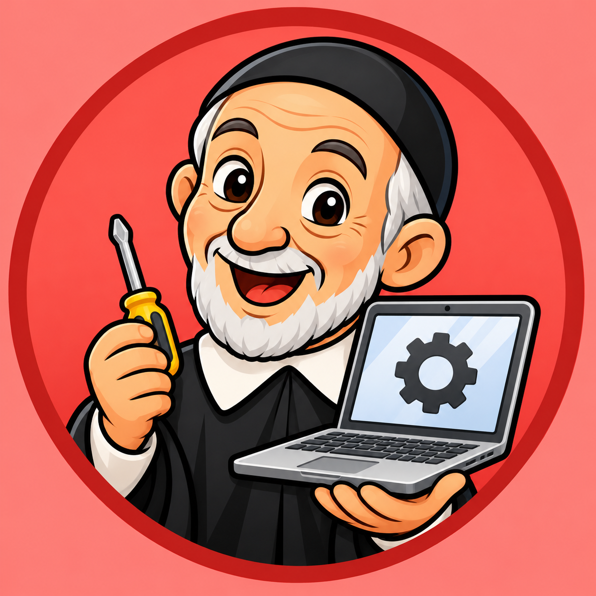

Tu panel de partes TIC
Guarda esta página en tu pantalla de inicio para tener Control TIC con su icono propio. Después, pulsa el botón para consultar y gestionar los partes.

Colegio San Vicente de Paúl · Cartagena
Para guardar tu icono en el móvil, abre el menú del navegador y elige «Añadir a pantalla de inicio». En ordenador, usa «Instalar app» si aparece o la opción de instalación del navegador.
Recibe una notificación cuando se registre un parte TIC. Los avisos de gestión se conectan con tu cuenta del colegio.
Abre el panel con tu cuenta del colegio para conectar los avisos.
En iPhone o iPad: comparte esta página en Safari, elige «Añadir a pantalla de inicio» y abre la app desde su icono para activar los avisos.
Guarda esta página en tu pantalla de inicio para tener Control TIC con su icono propio. Después, pulsa el botón para consultar y gestionar los partes.